Title: Mapping of mean values and interpolation of distributions
Date: 2018-06-25 17:50
Category: ComputationalFluidDynamics
Tags: Python, probablility densitiy function
Slug: spatial-interpolation-python
Cover: /posts/img5104/output_6_1.png
Authors: Peter Schuhmacher
Summary: We explore the building of mean values and interpolations when data have more than 1 dimension. We generate numerically a macro finite element so that arbitrary sized data can be anlalysed taking their inherent structure into account.
An interpolated value or a mean value \(\phi_P\) is most often evaluated by it’s neighbouring values using:
We can define two vectors \(\mathbf{\phi}\) and \(\mathbf{w}\) so that \(\phi_p\) can be computed as the scalar product of them:
where we assume that the weights \(w_i\) are normalized with \(W = \Sigma_i \tilde{w}_i\) in the sense: $\( \mathbf{w} = \begin{bmatrix} \tilde{w}_0, \, \tilde{w}_1, \, ......., \, \tilde{w}_n, \end{bmatrix} / W \)$
This type of model is used extremly often, e.g. in
health utilities in decision trees
effect size in meta analysis
evaluation of histogramms
agregation in multi criteria analysis
mean value of anything
but the inherent structures - cross correlations - are almost never taken into account… :-(
It’s extremly wide open what neighbouring means and what type of entities are summed up - in a multi criteria analysis just any- and everything. The same is true for the weights which are assigned with large values for the topics we think they are most true allready or we prefer most to become true.
Types and test cases in 2-dimensional space¶
We consider two algorithms for interpolation (which is the same as finding the mean for several points) in the 2-dimensional space. The 2 dimensions are easy to understand in a geometrical sens in a landscape. But the dimensions could be of abstract types too as it is known in PCA (principal component analysis).
Both algorithms take spatial distances somehow into account. But you will recognize:
the inverse distance algorithm is rather a pseudo-spatial method
the FEM (finite element) algorithm however does take into account the spatial structure
Interpolation with inverted distances¶
In this case the weights are determined as the invers of the distances of the observing points to the point \(\phi_P\) under consideration raised by some power \(p\) (already normalized with the sum of the distances \(D\)):
Despite the fact that the \(d_i\) respresent the distances in a 2-dimensional space the weightening and interpolation algorithm does not take any spatial structure into account. E.g. there is no difference wether the observed data points are on a +/- straight line away form \(\phi_p\) or wether they are located star shapeed aorund \(\phi_p\).
Interpolation with a finite element (FEM)¶
The finite element method does need a structured arangement of the points with the observed data. The FEM grid may be streched but it has to have the topology of a structured grid. Rather than the inversed distances the finite element method uses the inversed areas to the neighbouring points as weights. With these two features the spatial structure is included more explicitly in the mean building proces. Therfore the algorthm is more sophisticiated then the inverse distance method.
Consider the quadrilateral element with 4 nodes. The FEM method defines the spatial variation of a quantity \(\phi\) by a polynomial aproach. With polynoms of first order we get a bilinear interpolation which belongs to the much wider family of finite elements
At the corners 1, 2, 3, 4 all quantities \(\phi_i, \xi_i, \nu_i\) are known:
The up to now unknown quantity \(\mathbf{\alpha}\) can be evaluated by solving the equation system
Once \(\mathbf{\alpha}\) is known, at any point \((\xi, \nu)\) within the quadrilateral \(\phi\) can be interpolated by asigning
and then compute
\tilde{\mathbf{H}} = \begin{bmatrix} 1 \ \xi \ \xi^2 \ \xi^3 \end{bmatrix} \begin{bmatrix} 1 , \nu , \nu^2 , \nu^3 \end{bmatrix} =
\qquad (tensor : product) $$
\(\tilde{\mathbf{H}}\) with dimension \((nx , ny)\) has then to be reshaped into \(\mathbf{H}\) with dimension\((1, nx \cdot ny)\). \(nx\) and \(ny\) do not have to be of the same size. With that procedure we end up with the Lagrangian type of finite element.
Example 1: Interpolation of coordinates (half pipe)¶
In the picture of the left hand side we have 10 sampling points only. The points have been generated as part of a regular polar grid so that \((x,y) = (r\, cos\phi , r\, sin\phi)\). In this example we do not interpolate an additional value \(V(x,y)\) but we interpolate the coordinates of the sampling points with the finite element (FEM) principle itself. On the picture of the right hand side we can see that circular pattern can be restructed by the FEM-interpolation.
The curvilinear structure of the finite element can bee seen in the \((\xi, \nu) \longmapsto (x,y)\) mapping of the examples in section 3 below.
half_pipe(kx=15,ky=6,mx=5,my=2)
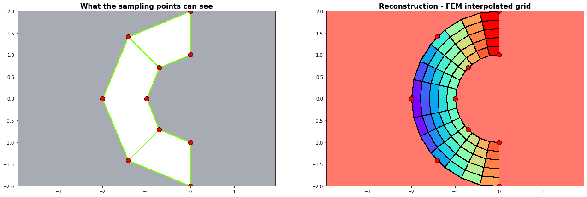
2. Mapping \((x,y) \longmapsto (\xi, \nu)\)¶
We map with the finite element the interpolated values to a regular rectangular \((\xi, \nu)\)-grid. The red sampling points do not have to be part of a rectangular grid, but they have to have the topological structure of a curvilienar (= curved and streched) grid.
Example 2.1: Circles¶
run_fem_interpolation(kx=35,ky=35,mx=5,my=5, gridCase='B', funcCase='B', mapCase='A',frnd=0.05)
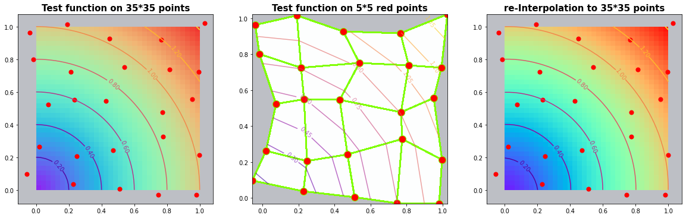
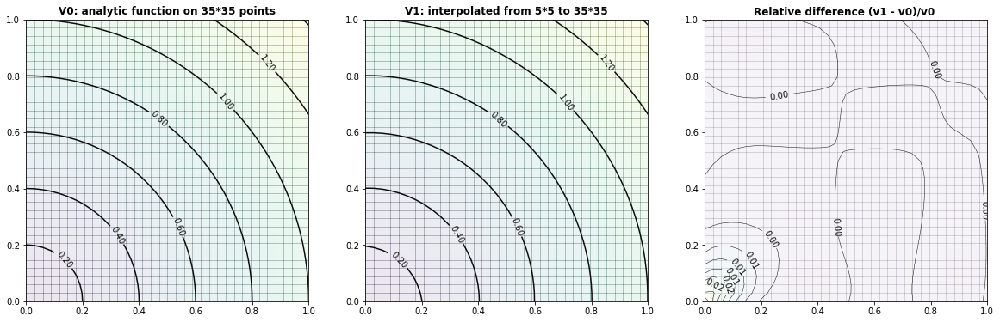
Example 2.2: The Six-hump-camelback-function¶
run_fem_interpolation(kx=35,ky=35,mx=5,my=5, gridCase='B', funcCase='C', mapCase='A',frnd=0.05)
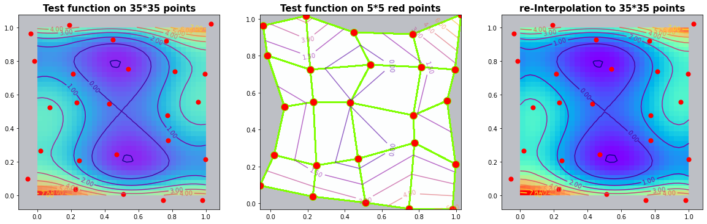
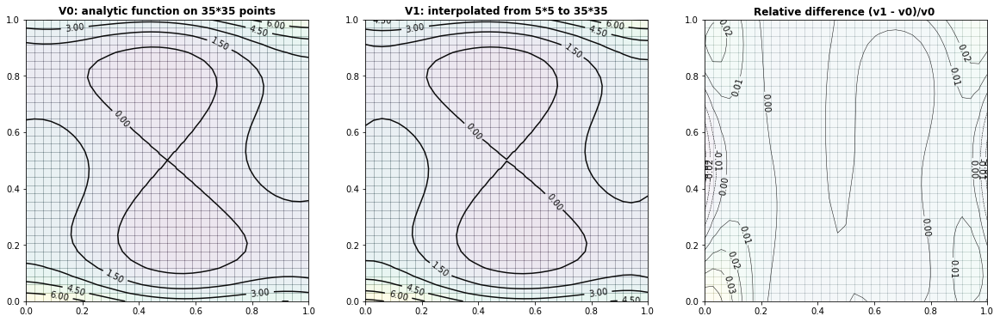
Example 2.3: Two-dimensional bimodal PDF¶
run_fem_interpolation(kx=35,ky=35,mx=7,my=7, gridCase='B', funcCase='D', mapCase='A',frnd=0.03)
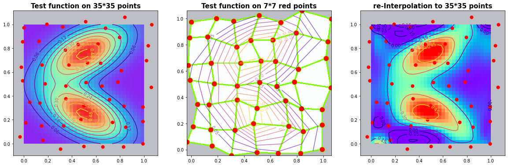
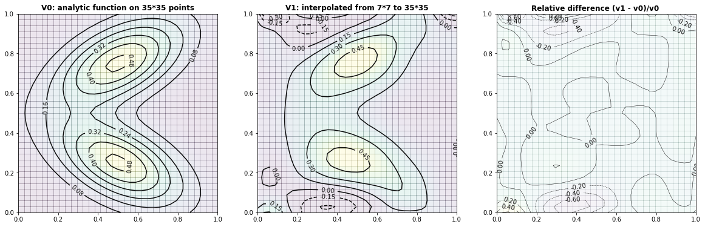
Example 2.3: Interpolation with \(\frac{1}{(distances) ^p}\) weights (without finite element)¶
We try out the same examples without finite elements. The weights are determined as the invers of the distances of the observing points to the point \(\phi_P\) under consideration:
In this examples we use a power of p=2 and we generate a regular grid of sampling points. The radial influence around the sampling points is distinguishable in the results.
fig = plt.figure(figsize=(22,7))
ax = plt.subplot(1, 3, 1); xs,ys,xp,yp,Vp = run_InvDist_interpolation(mx=5,my=5,kx=35,ky=35,funcCase='B'); plot_IDI(ax,xs,ys,xp,yp,Vp,Title='Inverse distances: Circles')
ax = plt.subplot(1, 3, 2); xs,ys,xp,yp,Vp = run_InvDist_interpolation(mx=5,my=5,kx=35,ky=35,funcCase='C'); plot_IDI(ax,xs,ys,xp,yp,Vp,Title='Inverse distances: 6-hump-camelback')
ax = plt.subplot(1, 3, 3); xs,ys,xp,yp,Vp = run_InvDist_interpolation(mx=7,my=7,kx=35,ky=35,funcCase='D'); plot_IDI(ax,xs,ys,xp,yp,Vp,Title='Inverse distances: Bi-modal PDF')
plt.show()
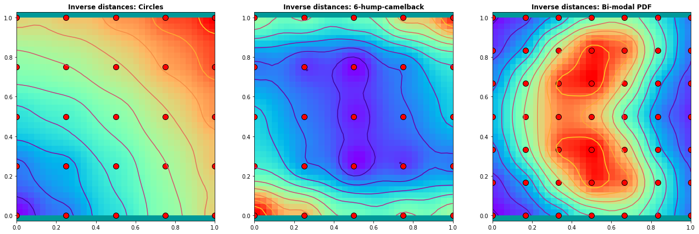
3. Mapping \( (\xi, \nu) \longmapsto (x,y)\)¶
In this section we map the value space to the curvilinear finite element in physical \((x,y)\)-coordinates itself. As a test: a straight line of constant values should remain a straight line even when the underlaying projection grid is curvilinear !
Example 3.1: Straight vertical lines¶
The first examples works so fine that the Python contour procedure can not find any isolines in the difference plot :-). But we have harder examples too !
run_fem_interpolation(kx=35,ky=35,mx=5,my=5, gridCase='B', funcCase='A', mapCase='B',frnd=0.03)
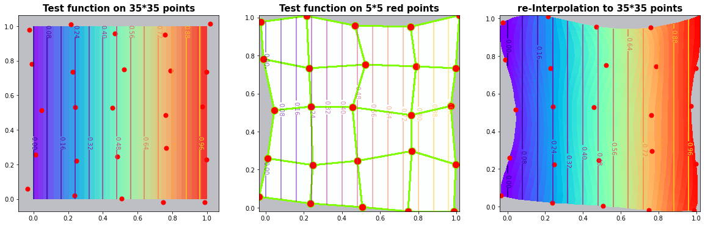
C:\Users\PC\AppData\Local\Temp/ipykernel_12156/2313032905.py:72: UserWarning: No contour levels were found within the data range.
CS = ax2.contour(xp,yp,vDiff,nL,alpha=0.95, colors='k', linewidths=0.5); ax2.clabel(CS, inline=1, fontsize=10, fmt='%1.2f')
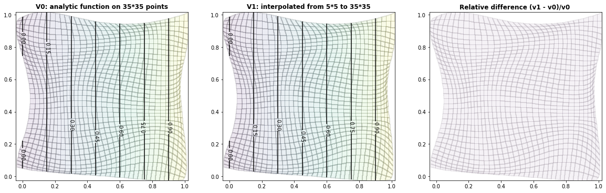
Example 3.2: Circles¶
run_fem_interpolation(kx=35,ky=35,mx=5,my=5, gridCase='B', funcCase='B', mapCase='B',frnd=0.03)
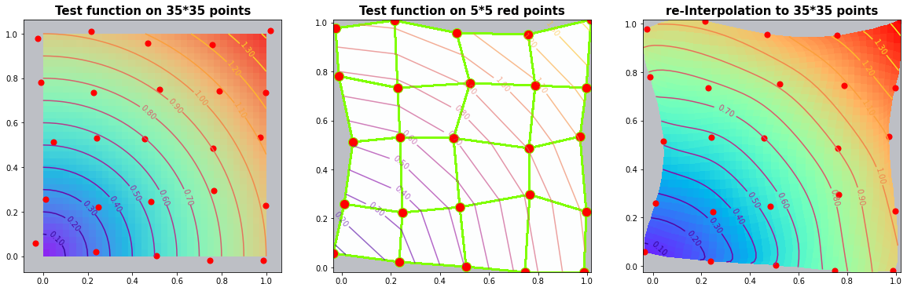
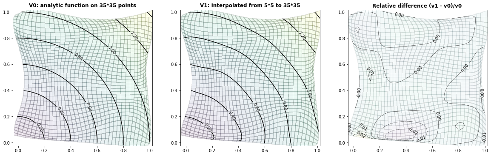
Example 3.3: The Six-hump-camelback-function¶
run_fem_interpolation(kx=35,ky=35,mx=5,my=5, gridCase='B', funcCase='C', mapCase='B',frnd=0.03)
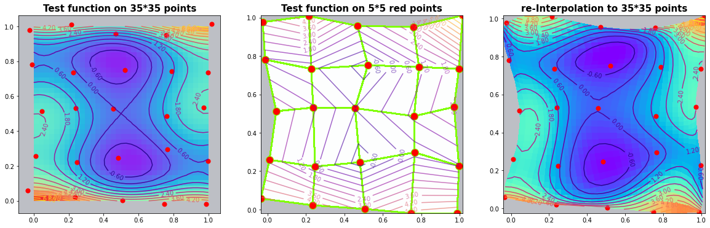
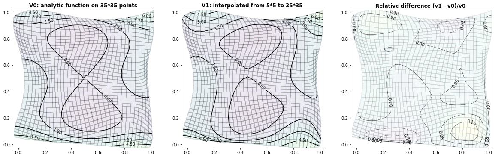
Example 3.4: Two-dimensional bimodal PDF¶
run_fem_interpolation(kx=35,ky=35,mx=5,my=5, gridCase='B', funcCase='D', mapCase='B',frnd=0.04)
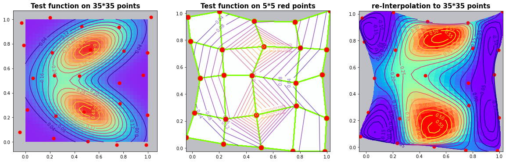
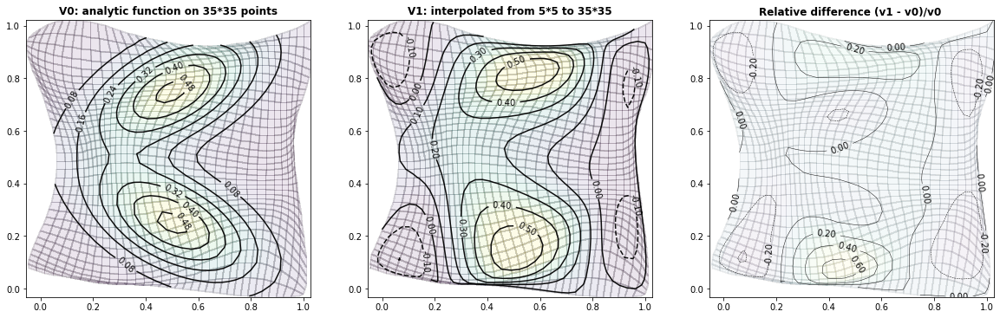
Python code: Finite element interpolation¶
from math import pow
from math import sqrt
import numpy as np
import scipy as sp
from scipy.sparse import csc_matrix
import matplotlib.pyplot as plt
import matplotlib.colors as mclr
from scipy.stats import multivariate_normal
np.set_printoptions(linewidth=200)
def scale(a): return (a-a.min())/(a.max()-a.min())
def redu(A): return A[0:-1,0:-1]
def setup_grid(mx,my):
sx, sy = np.linspace(0,1,mx), np.linspace(0,1,my) # 1D x/y-coord side of the FEM
ξc, νc = np.outer(sx,np.ones(my).T), np.outer(np.ones(mx).T,sy) # 2D grid
return ξc, νc
def DM(vx,vy,ψ): #---- data rotation
nx,ny = vx.shape;
ux,uy = vx.reshape(nx*ny,1), vy.reshape(nx*ny,1)
ux = np.cos(ψ)*vx -np.sin(ψ)*vy
uy = np.sin(ψ)*vx + np.cos(ψ)*vy
return ux.reshape(nx,ny), uy.reshape(nx,ny)
def valueFunction(x,y, fCase): # Generation of virtual data at the sampling points
if fCase == 'A': return x # vertical contstant lines
if fCase == 'B': return np.sqrt(x*x + y*y) # circle
if fCase == 'C': # six_hump_function
x = 2.5*(x-0.5); y = 2.5*(y-0.5);
return (4-2.1*x**2 + x**4/3.0)*x**2 \
+ x*y + (4.0*y**2 - 4)*y**2
if fCase == 'D': # a probability density function PDF
def myPDF(x,y): return np.exp(-(0.25*x**2 + y**2));
ψ = 0.15*np.pi; Lx = Ly = 6
xtrans, ytrans = Lx* (x-0.5), Ly* (y-0.75) # translation
xrotat, yrotat = DM(xtrans,ytrans,-ψ); # rotation
Vin1 = myPDF(xrotat,yrotat) # value 1
xtrans, ytrans = Lx* (x-0.5), Ly* (y-0.25) # translation
xrotat, yrotat = DM(xtrans,ytrans, ψ); # rotation
Vin2 = myPDF(xrotat, yrotat) # value 2
α = 0.5
return α*Vin1 + (1-α)*Vin2
def C_Line(mx,my,x,y): # set up Lagrange trial functions
px = np.ones(mx); py = np.ones(my)
for ix in range(1,mx): px[ix] = px[ix-1]*x
for iy in range(1,my): py[iy] = py[iy-1]*y
CL = np.outer(px,py)
return CL.reshape(mx*my)
def setup_FEM_B(xs,ys,val):
mx,my = xs.shape
C = np.array([]).reshape(0,mx*my); # initialise empty array C
for jx in range(mx):
for jy in range(my):
CL = C_Line(mx,my, xs[jx,jy], ys[jx,jy])
C = np.vstack((C,CL)) # build C-matrix with the shape function values at the FEM-points
α = np.linalg.solve(C, val.reshape(mx*my)) # α = evaluated shape functions
return α
def interpolateFEM(mx,my,qx,qy,α):
kx = qx.shape[0]; ky = qy.shape[1];
Vip = np.zeros_like(qx) # initialise output values
for jx in range(kx): # run through the output grid
for jy in range(ky):
H = C_Line(mx,my, qx[jx,jy], qy[jx,jy]) # get the values of the terms of the shape functions
Vip[jx,jy] = np.dot(α,H) # get the interpolated value by scalar product
return Vip
def set_xy_sample_grid(x,y,gridCase,frnd=0.3): # setup a grid in th physical(x,y)-domain
mx,my = x.shape
if gridCase=='A': # do nothing, return (ξ,ν)-grid
return x,y
if gridCase=='B': # add random noise
np.random.seed(111); u = x + frnd*np.random.randn(mx,my);
np.random.seed(222); v = y + frnd*np.random.randn(mx,my)
return u,v
if gridCase=='C': # construct a half pipe
r1=1.0; r2=2.0; dr = r2-r1;
r = r1 + y*dr; φ = 0.5*np.pi + x*np.pi
u = r*np.cos(φ); v = r*np.sin(φ)
return u,v
def run_fem_interpolation(kx,ky,mx,my,gridCase,funcCase,mapCase,frnd): # run through different cases
ξp, νp = setup_grid(kx,ky) # setup [0..1][0..1] output grid
ξs, νs = setup_grid(mx,my) # setup [0..1][0..1] input grid
xs, ys = set_xy_sample_grid(ξs,νs,gridCase,frnd) # setup a grid in the physical(x,y)-domain
Vξν_p = valueFunction(ξp, νp,funcCase) # for TEST only: set the values at output grid
Vξν_s = valueFunction(ξs, νs,funcCase) # set the values at the (ξ,ν) sampling points (= FEM points)
Vxy_s = valueFunction(xs, ys,funcCase) # set the values at the (x,y) sampling points (= FEM points)
if mapCase=='A': # map to regular (ξ,ν) [0..1][0..1]-grid
α = setup_FEM_B(xs,ys,Vxy_s); Vp = interpolateFEM(mx,my,ξp,νp,α) # mapping from (x,y) ---to--> (ξ,ν)
grafx_41(ξp,νp,Vξν_p, xs,ys,Vxy_s, ξp,νp, Vp,8)
grafx_div(xs,ξp,νp,Vξν_p,Vp,nL=8)
if mapCase=='B': # map to the curvilinear (x,y)-FEM-grid
α = setup_FEM_B(ξs,νs,xs); Xp = interpolateFEM(mx,my,ξp,νp,α); # get all (x,y) by interpolation
α = setup_FEM_B(ξs,νs,ys); Yp = interpolateFEM(mx,my,ξp,νp,α);
Vxy_p = valueFunction(Xp, Yp,funcCase) # for TEST only: get the 'output' values from the function
α = setup_FEM_B(ξs,νs,Vxy_s); Vp = interpolateFEM(mx,my,ξp,νp,α) # mapping from (ξ,ν) ---to--> (x,y)
grafx_41(ξp,νp,Vξν_p, xs,ys,Vxy_s, Xp,Yp,Vp,15)
grafx_div(xs,Xp,Yp,Vxy_p,Vp,nL=5)
return
#========= main ==========================================
# kx, ky : dimension of output grid
# mx, my : dimension of the finite element (=observed data)
# gridCase: A := [0..1][0..1]; B := A + random; C := halfe pipe
# funcCase: A := vertcal lines; B := circle; C := 6-hump-camelback; D := PDF
# mapCase : A := map to (ξ,ν)=[0..1][0..1]; B := map to curvilinear (x,y)
'''
run_fem_interpolation(kx=10,ky=10,mx=4,my=4, gridCase='B', funcCase='B', mapCase='B',frnd=0.042)
''' ;
Example ‘Half pipe’¶
def half_pipe(kx,ky,mx,my):
ξs, νs = setup_grid(mx,my) # setup computational [0..1][0..1] input grid
r1=1.0; r2=2.0; dr = r2-r1;
r, φ = r1 + νs*dr, 0.5*np.pi + ξs*np.pi
xs, ys = r*np.cos(φ), r*np.sin(φ) # setup (x,y) grid in physical domain
ξp, νp = setup_grid(kx,ky) # setup [0..1][0..1] output grid
α = setup_FEM_B(ξs,νs,xs); Xp = interpolateFEM(mx,my,ξp,νp,α); # <--- get all (x,y) by interpolation
α = setup_FEM_B(ξs,νs,ys); Yp = interpolateFEM(mx,my,ξp,νp,α);
plot_3(xs, ys,Xp, Yp)
#===== main ===================
# half_pipe(kx=15,ky=6,mx=5,my=2)
Python code: Inverse distance interpolation¶
def get_interpolatedValue(xd,yd,Vd, xpp,ypp, p,smoothing):
dx = xpp - xd; dy = ypp - yd
dd = np.sqrt(dx**p + dy**p + smoothing**p) # distance
dd = np.where(np.abs(dd) <10**(-3), 10**(-3), dd) # limit too small distances
dd = dd**(-p) # dd = weight = 1.0 / (dd**power)
dd = dd/np.sum(dd) # normalized weights
Vi = np.dot(dd,Vd) # interpolated value = scalar product <weight, value>
return Vi
def interpolateDistInvers(xd,yd,Vd, xp,yp, power,smoothing):
nx,ny = xp.shape
VI = np.zeros_like(xp) # initialize the output with zero
for jx in range(nx): # run through the output grid
for jy in range(ny):
VI[jx,jy] = get_interpolatedValue(xd,yd,Vd, xp[jx,jy],yp[jx,jy], power,smoothing)
return VI
def run_InvDist_interpolation(mx,my,kx,ky,funcCase):
#---- generate the 'observed' data Vs at (xs,ys) --------
xp, yp = setup_grid(kx,ky) # setup [0..1][0..1] output grid
xs, ys = setup_grid(mx,my) # setup [0..1][0..1] input grid (xs,ys)
Vs = valueFunction(xs, ys,funcCase) # set the values at the (xs,ys) grid points
#---- change the shape of the sampling points to 1-dim vectors -----------
xd = xs.reshape(mx*my)
yd = ys.reshape(mx*my)
Vd = Vs.reshape(mx*my)
#---- input: set interpolation parameters
power=2.0; smoothing=0.1
#---- run through the grid and get the interpolated value at each point
Vp = interpolateDistInvers(xd,yd,Vd, xp,yp, power,smoothing)
return xs,ys,xp,yp,Vp
'''
#====== main ================
fig = plt.figure(figsize=(22,7))
ax = plt.subplot(1, 3, 1); xs,ys,xp,yp,Vp = run_InvDist_interpolation(mx=5,my=5,kx=35,ky=35,funcCase='B'); plot_IDI(ax,xs,ys,xp,yp,Vp,Title='Inverse distances: Circles')
ax = plt.subplot(1, 3, 2); xs,ys,xp,yp,Vp = run_InvDist_interpolation(mx=5,my=5,kx=35,ky=35,funcCase='C'); plot_IDI(ax,xs,ys,xp,yp,Vp,Title='Inverse distances: 6-hump-camelback')
ax = plt.subplot(1, 3, 3); xs,ys,xp,yp,Vp = run_InvDist_interpolation(mx=5,my=5,kx=35,ky=35,funcCase='D'); plot_IDI(ax,xs,ys,xp,yp,Vp,Title='Inverse distances: Bi-modal PDF')
plt.show()
''' ;
Graphics¶
def plot_IDI(ax1,xs,ys,xp,yp,Vp,Title):
cmap='rainbow'
ax1.set_facecolor('#009999')
ax1.contour(xp, yp, Vp, 10,cmap="plasma")
ax1.pcolormesh(xp, yp, redu(Vp), cmap=cmap, edgecolor='none');
ax1.scatter(xs, ys, s=100, c='r', edgecolor='black')
ax1.set_title(Title, fontweight='bold', fontsize=12)
ax1.set_aspect('equal', 'datalim')
def plot_3(Xs, Ys,Xfem, Yfem):
fig = plt.figure(figsize=(22,7))
ax2 = plt.subplot(1, 2, 1)
cmap='rainbow'
myCmap = mclr.ListedColormap(['white','white'])
ax2.set_facecolor((0.144, 0.176, 0.255, 0.4))
ax2.pcolormesh(Xs, Ys, redu(Xs), edgecolors='chartreuse', lw=1, cmap=myCmap); #,shading='gouraud'
ax2.scatter(Xs, Ys, s=100, c='r', edgecolor='black')
ax2.set_title('What the sampling points can see', fontweight='bold', fontsize=15)
ax2.set_aspect('equal', 'datalim')
ax3 = plt.subplot(1, 2, 2)
cmap='rainbow'
ax3.set_facecolor((1.0, 0.47, 0.42))
ax3.pcolormesh(Xfem, Yfem, redu(Xfem), cmap=cmap, edgecolor='black');
ax3.scatter(Xs, Ys, s=100, c='r', edgecolor='black')
ax3.set_title('Reconstruction - FEM interpolated grid', fontweight='bold', fontsize=15)
ax3.set_aspect('equal', 'datalim')
plt.show()
def grafx_41(xp0,yp0,vp0,xs,ys,vs,xp,yp,vp,nL=8):
kx,ky = xp.shape
mx,my = xs.shape
with plt.style.context('fast'): # fivethirtyeight
nm = plt.Normalize(vmin=np.min(vp0), vmax=np.max(vp0))
#if 1==1:
fig, (ax0,ax1, ax2) = plt.subplots(1, 3, figsize=(20,8)) #sharey=True,
cmap='rainbow'
ax0.set_facecolor((0.144, 0.176, 0.255, 0.3))
ax0.pcolormesh(xp0,yp0,redu(vp0),cmap=cmap,norm=nm, edgecolor=None,alpha=0.8)
CS = ax0.contour(xp0,yp0,vp0,nL,norm=nm,cmap="plasma",alpha=0.95); ax0.clabel(CS, inline=1, fontsize=10, fmt='%1.2f')
ax0.set_title('Test function on '+ str(kx)+'*'+str(ky)+' points', fontsize=15, fontweight='bold')
ax0.set_aspect('equal')
ax0.scatter(xs,ys,s=50,c='r')
ax1.set_facecolor((0.144, 0.176, 0.255, 0.3))
myCmap = mclr.ListedColormap(['white','white'])
ax1.pcolormesh(xs,ys,redu(vs),cmap=myCmap,edgecolor='chartreuse', linewidth=2, alpha=0.99)
CS = ax1.contour(xs,ys,vs,nL,cmap="plasma", alpha=0.6); ax1.clabel(CS, inline=1, fontsize=10, fmt='%1.2f')
ax1.scatter(xs,ys,s=150,c='r', edgecolor='chartreuse',alpha=1.0)
ax1.set_title('Test function on '+ str(mx)+'*'+str(my)+' red points', fontsize=15, fontweight='bold')
ax1.set_aspect('equal')
ax2.set_facecolor((0.144, 0.176, 0.255, 0.3))
ax2.pcolormesh(xp,yp,redu(vp),cmap=cmap,norm=nm, edgecolor=None)
CS = ax2.contour(xp,yp,vp,nL,norm=nm,cmap="plasma"); ax2.clabel(CS, inline=1, fontsize=10, fmt='%1.2f')
ax2.scatter(xs,ys,s=50,c='r')
ax2.set_title('re-Interpolation to '+ str(kx)+'*'+str(ky)+' points', fontsize=15, fontweight='bold')
ax2.set_aspect('equal')
plt.show()
def grafx_div(xs,xp,yp,vp0,vp1,nL=8):
kx,ky = xp.shape
mx,my = xs.shape
vDiff = (vp1-vp0)/np.max(vp0)
nm = plt.Normalize(vmin=np.min(vp0), vmax=np.max(vp0))
with plt.style.context('fast'): # fivethirtyeight
fig, (ax0,ax1, ax2) = plt.subplots(1, 3, figsize=(20,8)) #sharey=True,
ax0.pcolormesh(xp,yp,redu(vp0),norm=nm,edgecolor='k',alpha=0.1)
CS = ax0.contour(xp,yp,vp0,norm=nm,alpha=0.95, colors='k'); ax0.clabel(CS, inline=1, fontsize=10, fmt='%1.2f')
ax0.set_title('V0: analytic function on '+ str(kx)+'*'+str(ky)+' points', fontsize=12, fontweight='bold')
ax0.set_aspect('equal')
ax1.pcolormesh(xp,yp,redu(vp1),norm=nm,edgecolor='k',alpha=0.1)
CS = ax1.contour(xp,yp,vp1,norm=nm,alpha=0.95, colors='k'); ax1.clabel(CS, inline=1, fontsize=10, fmt='%1.2f')
ax1.set_title('V1: interpolated from '+ str(mx)+'*'+str(my)+' to '+ str(kx)+'*'+str(ky), fontsize=12, fontweight='bold')
ax1.set_aspect('equal')
ax2.pcolormesh(xp,yp, redu(vDiff),edgecolor='k',alpha=0.05)
CS = ax2.contour(xp,yp,vDiff,nL,alpha=0.95, colors='k', linewidths=0.5); ax2.clabel(CS, inline=1, fontsize=10, fmt='%1.2f')
ax2.set_title('Relative difference (v1 - v0)/v0 ', fontsize=12, fontweight='bold')
ax2.set_aspect('equal')
plt.show()